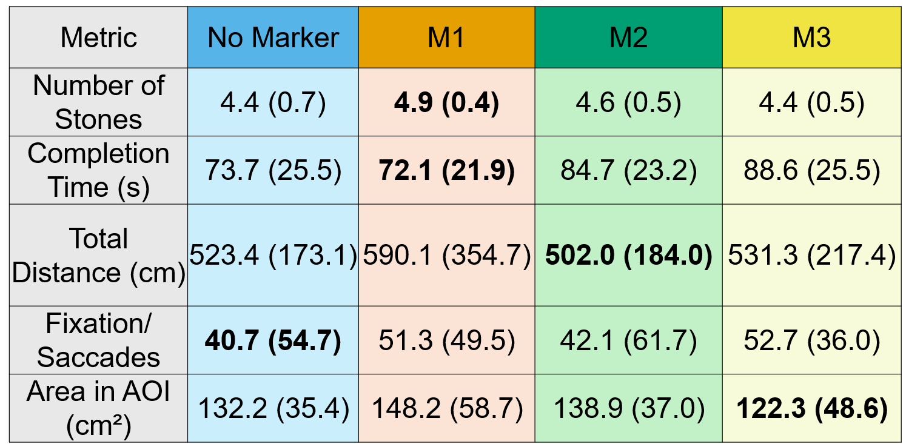

Project Demo Video
Project Description
The number of kidney stone cases in the United States has tripled since 1980. Approximately 23% of kidney stone removal procedures require repeat operations within 20 months, often due to stones being missed during the initial treatment. Effective training can reduce this reoperation rate; however, opportunities for intraoperative learning are limited, as patient care must take precedence.
Augmented reality (AR) systems have been shown to improve training effectiveness by providing real-time visual feedback, though careful interface design is necessary to ensure compatibility with clinical workflow. Building upon prior design guidelines and AR-based surgical training tools, this work investigates the effect of providing visual guidance through three distinct AR gaze markers.
The AR training system tracks the expert surgeon’s eye gaze and projects a corresponding marker onto the trainee’s head-mounted display. Eight surgical trainees performed a simulated ureteroscopy task in high-fidelity kidney phantoms while guided by an expert. The number of stones identified, task duration, and gaze-related metrics were recorded. Subjective assessments were also collected using the NASA-TLX questionnaire.
The findings indicated that although some markers increased perceived mental demand, they enhanced engagement and improved performance. Gaze analysis demonstrated that marker design influences cognitive load, as reflected by fixation-to-saccade ratios. The results highlight AR’s potential in advancing intraoperative surgical training through effective gaze-based design.
Eye Gaze Marker Co-Design
The three AR gaze markers were developed following design guidelines derived from a prior semi-structured co-design study. Each marker was designed to support clear visual communication between the expert and trainee while minimizing cognitive load. The designs aimed to reflect variations in visual salience and movement characteristics that align with surgical attention cues.


System Workflow
A real-time AR application was developed to share expert surgeons’ eye gaze with trainees. The application was implemented in Unity using the Mixed Reality Toolkit (MRTK2) and Photon Unity Networking (PUN). Gaze data were captured using the onboard sensors of the HoloLens 2. Prior to each study session, an eye calibration procedure was performed to ensure accurate tracking.
During the study, both users stood side by side facing a surgical monitor that was localized using four ArUco markers. The positions of the bottom and left markers were used to determine the monitor’s width and height, respectively, while the virtual monitor’s position was defined by averaging all marker locations. This configuration enabled the expert’s gaze and frame transformations to be transmitted via PUN, allowing the trainee’s HoloLens to project the expert’s gaze accurately onto a shared virtual screen. This setup ensured visibility from all angles and reduced positional bias. A remote-control interface was used to manage marker display throughout the sessions.

User Study
A user study was conducted to evaluate the effectiveness of the designed markers. The study involved one expert surgeon and eight surgical trainees. In each trial, a trainee navigated a kidney phantom using a LithoVue ureteroscope (Boston Scientific, Marlborough, MA) under the expert’s guidance. The trainee was instructed to explore the kidney and report the number of stones discovered. Each phantom contained five stones, though this number was not disclosed to participants.
Each trainee completed four trials—one with each of the three marker designs and one with no marker. In the no-marker condition, guidance was provided verbally, consistent with the standard of care. In the marker conditions, both verbal and visual feedback were presented through the HoloLens 2. The order of markers and phantoms was randomized to minimize learning bias.


Results and Evaluation
Task performance and perceived workload were assessed using objective task metrics and subjective NASA-TLX evaluations. The results indicated that the use of augmented reality (AR) markers increased fixation duration on relevant regions, improved the percentage of stones found, and enhanced gaze behavior while reducing physical demand compared to the no-marker condition.
The M1 design demonstrated the lowest mental and temporal demand, effort, and frustration, indicating reduced cognitive and temporal load. However, this design was associated with a greater gaze distance traveled, reflecting more extensive visual exploration.
The M2 marker achieved the best self-evaluated performance among participants, though it also showed higher effort and frustration levels, suggesting stronger task engagement. Its lower fixation-to-saccade ratio compared with the other markers reflected a decrease in cognitive load during visual scanning.
The M3 design resulted in the lowest percentage of stones found and higher mental demand and effort, indicating that its visual characteristics may have introduced additional cognitive processing.

Conclusion
This work evaluated the impact of three gaze markers in an AR gaze-based training system. Each trainee performed ureteroscopy on four phantoms, guided by verbal feedback or by a combination of verbal and visual feedback. Task performance, gaze metrics, and perceived workload were recorded. The results indicated that appropriately designed gaze markers can reduce cognitive load and enhance task engagement. The study underscores the importance of surgeon-centered AR design in advancing surgical training and education.
Check out the project on GitHub.